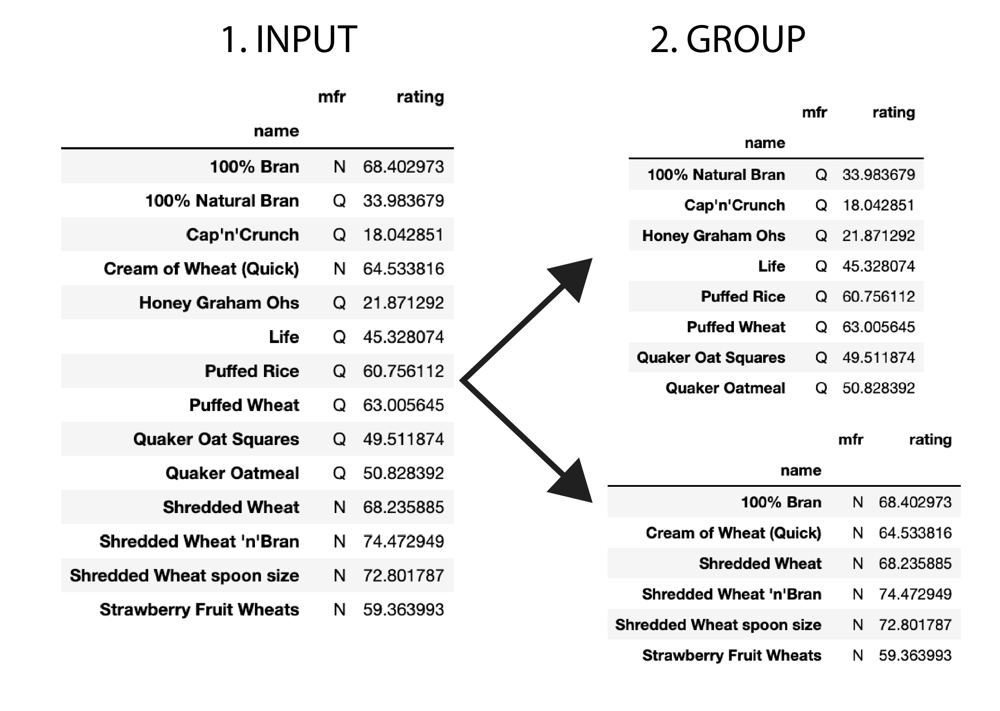
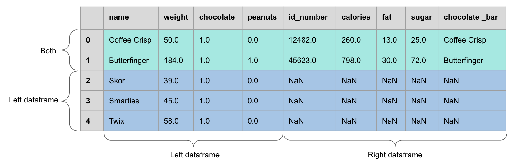

| country | capital | |
|---|---|---|
| 0 | Ireland | Dublin |
| 1 | France | Paris |
| 2 | Japan | Tokyo |
Lecture 6: Data Wrangling with pandas
BAA1118 - Foundations of Programming for Analytics & AI
Damien Dupré
pandas and DataFrames
pandas is Python’s library for tables, imported as pd:
- A DataFrame: named columns, and rows labelled by an index
- Each key of the dictionary becomes a column, and its list the column’s values
- One column on its own,
capitals["capital"], is a Series
Five Operations
Almost every data question needs only five operations:
| Operation | What it does | In pandas |
|---|---|---|
| Selection | keeps columns | df[["a", "b"]] |
| Reduction | keeps rows | df[df["a"] > 0] |
| Extension | adds a column | df["c"] = df["a"] * 2 |
| Aggregation | one row per group | df.groupby("a")["b"].mean() |
| Combination | joins two tables | df.merge(other, on="a") |
df is any table, and a, b and c are its columns. Each operation has its own section, in this order.
The gapminder Dataset
Each row is a country in a given year, every five years from 1952 to 2007: country, continent, year, lifeExp (in years), pop and gdpPercap (in US$).
| country | continent | year | lifeExp | pop | gdpPercap | |
|---|---|---|---|---|---|---|
| 0 | Afghanistan | Asia | 1952 | 28.801 | 8425333 | 779.445314 |
| 1 | Afghanistan | Asia | 1957 | 30.332 | 9240934 | 820.853030 |
| 2 | Afghanistan | Asia | 1962 | 31.997 | 10267083 | 853.100710 |
pd.read_csv() reads a CSV file into a DataFrame; .head(3) shows its first 3 rows.
Your Turn: Get Set Up
In a new notebook, run this cell first:
You should see Afghanistan in 1952, 1957 and 1962. Keep the notebook open: today’s exercises reuse pd and gapminder.
A First Look
(1704, 6)
<class 'pandas.core.frame.DataFrame'>
RangeIndex: 1704 entries, 0 to 1703
Data columns (total 6 columns):
# Column Non-Null Count Dtype
--- ------ -------------- -----
0 country 1704 non-null object
1 continent 1704 non-null object
2 year 1704 non-null int64
3 lifeExp 1704 non-null float64
4 pop 1704 non-null int64
5 gdpPercap 1704 non-null float64
dtypes: float64(2), int64(2), object(2)
memory usage: 80.0+ KBinfo() gives each column’s type and how many values are present. str is text: older tutorials and AI assistants show object, from pandas 2.
describe() and value_counts()
describe()gives the range and the quartiles: look for impossible values, such as a negative populationvalue_counts()counts the rows for each value, most frequent first
Your Turn: A First Look
Replace each ____, using the comments, then run the cell:
You should see (1704, 6), then 142, then Africa first, with 624 rows.
Solution
1. Selecting Columns
Selecting Columns
A list of names, so two pairs of square brackets: a DataFrame
- Keep only the columns a question needs: tables often have dozens
- The names must be spelt exactly as in the table, capitals included
Renaming Columns
| country | continent | year | lifeExp | population | gdpPercap | |
|---|---|---|---|---|---|---|
| 0 | Afghanistan | Asia | 1952 | 28.801 | 8425333 | 779.445314 |
| 1 | Afghanistan | Asia | 1957 | 30.332 | 9240934 | 820.853030 |
| 2 | Afghanistan | Asia | 1962 | 31.997 | 10267083 | 853.100710 |
rename()takes a dictionary,{old name: new name}- It returns a new table: store it, or nothing changes
gapminderitself is unchanged: the next slides still use its own names
Your Turn: Select and Rename
Replace each ____, using the comments, then run the cell. Column names go in quotes:
You should see the columns country, year and life, and Afghanistan in 1952 with 28.801.
Solution
2. Filtering and Sorting Rows
Filtering Rows
| country | continent | year | lifeExp | pop | gdpPercap | |
|---|---|---|---|---|---|---|
| 744 | Ireland | Europe | 1952 | 66.91 | 2952156 | 5210.280328 |
| 745 | Ireland | Europe | 1957 | 68.90 | 2878220 | 5599.077872 |
| 746 | Ireland | Europe | 1962 | 70.29 | 2830000 | 6631.597314 |
gapminder["country"] == "Ireland"givesTrueorFalsefor every row- The square brackets around it keep the rows that are
True - The numbers on the left are the index: each row keeps its label, here 744 to 746
- Text goes in quotes,
"Ireland"; numbers do not:gapminder["year"] == 2007
Comparisons
| Operator | Means |
|---|---|
== |
exactly equal |
!= |
not equal |
> and >= |
greater than, greater than or equal |
< and <= |
less than, less than or equal |
The easiest mistake to make is one = instead of two:
SyntaxError: cannot assign to subscript here. Maybe you meant '==' instead of '='?= stores a value, == compares two. Python stops, and suggests the fix.
Several Conditions, Several Values
2 24 284&for and,|for or, with each condition in its own round brackets. The wordsandandordo not work on columnsisin([...])keeps any of several values;between(a, b)keeps a to b, both includedlen()of a table counts its rows: 2, 24 and 284 here
Sorting Rows
| country | continent | year | lifeExp | pop | gdpPercap | |
|---|---|---|---|---|---|---|
| 803 | Japan | Asia | 2007 | 82.603 | 127467972 | 31656.06806 |
| 671 | Hong Kong, China | Asia | 2007 | 82.208 | 6980412 | 39724.97867 |
| 695 | Iceland | Europe | 2007 | 81.757 | 301931 | 36180.78919 |
sort_values("lifeExp")puts the smallest first; withascending=False, the largest- After a sort,
.head(3)gives the top three: Japan first, at 82.6 years g2007, the 142 countries in 2007, comes back in sections 4 and 5
Your Turn: Filter
Replace each ____, using the comments, then run the cell:
You should see 12 1, then France in 1982, with a lifeExp of 74.89.
Solution
12 1| country | continent | year | lifeExp | pop | gdpPercap | |
|---|---|---|---|---|---|---|
| 534 | France | Europe | 1982 | 74.89 | 54433565 | 20293.89746 |
Text goes in quotes, "France"; numbers do not, 1982.
3. Creating Columns
Creating Columns
| country | year | pop_m | gdp_bn | |
|---|---|---|---|---|
| 0 | Afghanistan | 1952 | 8.4 | 6.567086 |
| 1 | Afghanistan | 1957 | 9.2 | 7.585449 |
| 2 | Afghanistan | 1962 | 10.3 | 8.758856 |
gdp_bnis the GDP in billions of US$,pop_mthe population in millions: the_in1_000_000only makes the number easier to read- A new name on the left creates a column; an existing name replaces it
- The calculation runs on every row at once, with no loop
- Text columns have their own methods, after
.str:gapminder["country"].str.upper()
Your Turn: New Columns
Replace each ____, using the comments, then run the cell:
You should see AFGHANISTAN and 345.612 on the first row.
Solution
4. Summarising by Group
One Number for a Column
59.474439366197174
60.7125
1318683096mean(),median(),sum(),min(),max(),std()andcount()each turn a whole column into one number- To round that number, Python’s
round(x, 1); to round a column or a table,.round(1)
One Number per Group

Source: UBC Master of Data Science, Programming in Python for Data Science
groupby("continent") splits the rows into groups, as in the picture; ["lifeExp"].mean() applies the mean to each group and combines the results, with the continents as the index.
One Step per Line
Step by step, one name per step:
The same steps as one chain:
Both give the mean life expectancy per continent in 2007, highest first:
continent
Oceania 80.719500
Europe 77.648600
Americas 73.608120
Asia 70.728485
Africa 54.806038
Name: lifeExp, dtype: float64Read each new line of a chain as then: take g2007, then group it by continent, then take the mean, then sort. The round brackets let it run over several lines.
Several Statistics at Once
| countries | mean_life | |
|---|---|---|
| continent | ||
| Oceania | 2 | 80.719500 |
| Europe | 30 | 77.648600 |
| Americas | 25 | 73.608120 |
| Asia | 33 | 70.728485 |
| Africa | 52 | 54.806038 |
- Inside
.agg(), each statistic gets a name, then a column and a function:mean_life=("lifeExp", "mean") - The next step can use that name:
.sort_values("mean_life")
Wide Tables: pivot_table
| year | 1952 | 1977 | 2007 |
|---|---|---|---|
| continent | |||
| Africa | 39.1 | 49.6 | 54.8 |
| Americas | 53.3 | 64.4 | 73.6 |
| Asia | 46.3 | 59.6 | 70.7 |
| Europe | 64.4 | 71.9 | 77.6 |
| Oceania | 69.3 | 72.9 | 80.7 |
indexgives the rows,columnsthe new columns,valuesandaggfuncthe cells: an Excel pivot table in one line- Lecture 7 turns it round, with the years as rows, and draws one line per continent
Your Turn: Summarise
Replace each ____, using the comments, then run the cell:
You should see Oceania first; in Asia, a mean of 12473 but a median of 4471.
Solution
| mean_gdp | median_gdp | |
|---|---|---|
| continent | ||
| Oceania | 29810.0 | 29810.0 |
| Europe | 25054.0 | 28054.0 |
| Asia | 12473.0 | 4471.0 |
| Americas | 11003.0 | 8948.0 |
| Africa | 3089.0 | 1452.0 |
5. Joining Tables
Joining Two Tables
Two tables share a key: here, the chocolate bar’s name.

how="inner", the default, keeps the rows in both tables: rows 0 and 1how="left"keeps every row of the left table,NaNwhere nothing matched
Source: UBC Master of Data Science, Programming in Python for Data Science
merge() in Practice
142 rows before, 142 after; 2 without a leadon=names the key: a column in both tables, with matching values- Oceania has no lead: its 2 countries get
NaN, a missing value, which.isna().sum()counts - With
how="inner", those 2 rows would disappear without a warning: check the row count after every join
Your Turn: Join
Replace each ____, using the comments, then run the cell:
You should see 3. Then change "inner" to "left" and run the cell again: 142.
Solution
3 142inner keeps the 3 countries found in both tables; left keeps all 142, with NaN as the capital of the other 139.
When pandas Stops
| You see | Why | Fix |
|---|---|---|
KeyError: 'lifeExp' |
no column has that name: a typo, or it was renamed | check the names with gapminder.columns |
NameError: name 'country' is not defined |
a column name without quotes | "country", in quotes |
SyntaxError: ... Maybe you meant '==' |
one = inside a filter |
== |
ValueError: The truth value of a Series is ambiguous |
and or or between two conditions |
& or |, with each condition in round brackets |
| no error, but nothing changed | rename() returns a new table |
gapminder = gapminder.rename(...) |
| rows missing after a join | how="inner", the default, drops the rows with no match |
how="left", then check len() |
Read an error from its last line: it names the problem, and often the fix.
References
- 10 minutes to pandas: the official introduction
- Comparison with spreadsheets: Excel’s filters, pivot tables and lookups, in pandas
- Python for Data Analysis, 3rd edition: free online, by the creator of pandas
- Programming in Python for Data Science: UBC Master of Data Science, the source of two of this lecture’s images
- The pandas cheat sheet: two pages, to print

Thanks for your attention and don’t hesitate to ask if you have any questions!